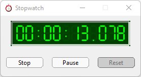
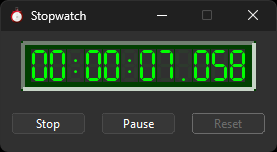
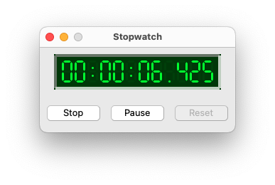
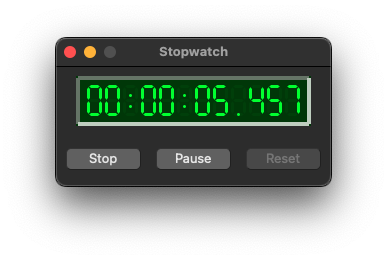
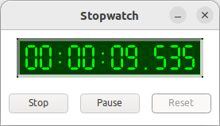
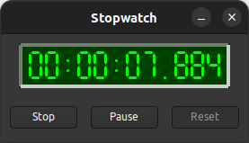

|
xtd
0.2.0
|
Loading...
Searching...
No Matches
stopwatch_form.cpp
demonstrates the use of xtd::forms::button, xtd::forms::label controls and xtd::forms::timer component.
- Windows
- 

- macOS
- 

- Gnome
- 

#include "../properties/resources.hpp"
#include <xtd/xtd>
class main_form : public form {
public:
main_form() {
text("Stopwatch");
start_position(form_start_position::center_screen);
client_size({275, 120});
icon(stopwatch_form::properties::resources::stopwatch_ico());
form_border_style(forms::form_border_style::fixed_single);
maximize_box(false);
watch_panel.parent(*this);
watch_panel.border_style(forms::border_style::bevel_inset);
watch_panel.bounds({20, 10, 235, 50});
watch_panel.back_color(color_converter::average(color::black, color::lime, 0.25));
watch_panel.fore_color(color::lime);
watch.parent(watch_panel);
watch.bounds({10, 8, 214, 33});
watch.text("00:00:00.000");
start_stop.parent(*this);
start_stop.location({10, 80});
start_stop.text("Start");
start_stop.click += event_handler(*this, &main_form::on_start_stop_click);
pause_resume.parent(*this);
pause_resume.location({100, 80});
pause_resume.text("Pause");
pause_resume.enabled(false);
pause_resume.click += event_handler(*this, &main_form::on_pause_resume_click);
reset.parent(*this);
reset.location({190, 80});
reset.text("Reset");
reset.enabled(false);
reset.click += event_handler(*this, &main_form::on_reset_click);
timer_chrono.interval(11_ms);
timer_chrono.tick += event_handler(*this, &main_form::on_timer_tick);
}
private:
void on_start_stop_click(object& sender, const event_args& e) {
if (stopwatch.is_running()) stopwatch.stop();
else stopwatch.start();
timer_chrono.enabled(stopwatch.is_running());
start_stop.text(timer_chrono.enabled() ? "Stop" : "Start");
pause_resume.enabled(timer_chrono.enabled());
reset.enabled(!timer_chrono.enabled() || !stopwatch.is_running());
};
void on_pause_resume_click(object& sender, const event_args& e) {
timer_chrono.enabled(!timer_chrono.enabled());
pause_resume.text(timer_chrono.enabled() ? "Pause" : "Resume");
start_stop.enabled(timer_chrono.enabled());
reset.enabled(!timer_chrono.enabled() || !stopwatch.is_running());
};
void on_reset_click(object& sender, const event_args& e) {
timer_chrono.enabled(false);
stopwatch.reset();
start_stop.enabled(true);
pause_resume.enabled(false);
reset.enabled(false);
watch.text("00:00:00.000");
start_stop.text("Start");
pause_resume.text("Pause");
};
void on_timer_tick(object& sender, const event_args& e) {
watch.text(string::format("{0:H}:{0:M}:{0:S}.{0:L}", stopwatch.elapsed()));
};
xtd::diagnostics::stopwatch stopwatch;
panel watch_panel;
lcd_label watch;
button start_stop;
button pause_resume;
button reset;
forms::timer timer_chrono;
};
auto main() -> int {
application::run(main_form());
}
Provides a set of methods and properties that you can use to accurately measure elapsed time.
Definition stopwatch.hpp:36
Generated on Fri Oct 24 2025 22:15:11 for xtd by Gammasoft. All rights reserved.